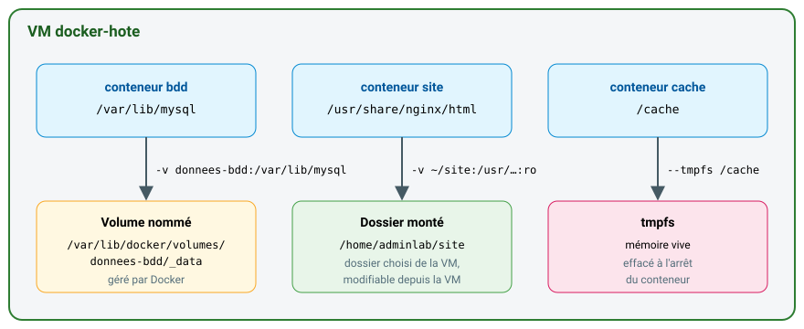

Garder ses données : volumes et dossiers montés¶
Résumé
Un conteneur est jetable : on le supprime et on le recrée sans regret… sauf quand il contient une base de données. Ce TP commence par perdre des données exprès, avec un serveur MariaDB, pour comprendre pourquoi. On range ensuite ces données dans un volume nommé, qui survit à la suppression du conteneur, puis on le sauvegarde dans une archive et on le restaure dans un volume neuf.
On découvre enfin les dossiers montés (bind mounts), qui partagent un dossier de la VM avec un conteneur, et les tmpfs, stockés en mémoire. À la fin, on sait choisir où ranger les données d'un service, et les protéger.
| Propriété | Valeur |
|---|---|
| Difficulté | Débutant |
| Durée estimée | 2 h |
| Version décrite | Docker Engine 29.10, MariaDB 11.8, nginx 1.31 |
| Place dans le parcours | Partie 5 sur 17 du parcours Docker — jour 2 |
| Dernière mise à jour | 2026-11-24 |
Convention de lecture
🖥️ PC hôte · 🐧 VM docker-hote, connecté en tssr · 📦 dans un conteneur · 🌐 navigateur du PC · ✍️ exercice. Point de départ : l'instantané 02-fin-jour-1. 🖥️ Démarrer la VM, puis s'y connecter en SSH : ssh tssr@IP-de-la-VM. Seul le conteneur portainer doit tourner (docker ps).
1. Perdre des données, pour comprendre¶
1.1 Une base de données dans un conteneur¶
-
🐧 Lancer un serveur de base de données MariaDB, avec un mot de passe pour son administrateur
root:L'option
-e(environment) passe une variable d'environnement au conteneur. C'est la façon habituelle de configurer une image : la documentation de chaque image (ici MariaDB sur Docker Hub) liste les variables qu'elle comprend. Le mot de passe est entre apostrophes'…'pour que le!ne soit pas interprété par le terminal. -
🐧 Le premier lancement télécharge d'abord l'image (environ 110 Mo). Puis, au premier démarrage, MariaDB crée ses fichiers et son compte administrateur : cela prend une dizaine de secondes. Suivre les journaux jusqu'à voir deux fois la ligne
ready for connections, puis Ctrl+C :2026-11-24 06:45:08+00:00 [Note] [Entrypoint]: Initializing database files … 2026-11-24 6:45:18 0 [Note] mariadbd: ready for connections. 2026-11-24 06:45:20+00:00 [Note] [Entrypoint]: MariaDB init process done. Ready for start up. … 2026-11-24 6:45:21 0 [Note] mariadbd: ready for connections.La première fois, c'est un serveur temporaire qui prépare la base ; la seconde, le vrai serveur. Une requête envoyée trop tôt échoue avec
Can't connect to local server through socketouAccess denied: il suffit d'attendre. -
🐧 Créer une base
tp, une table et deux lignes, puis les afficher. La commandemariadbest le client en ligne de commande, lancé dans le conteneur avecdocker exec:
Des mots de passe en clair
Dans ce lab, le mot de passe est tapé sur la ligne de commande : il reste dans l'historique du terminal et dans docker inspect bdd. En production, on le passe par un fichier (variable MARIADB_ROOT_PASSWORD_FILE, ou les secrets de Docker Compose), et l'on tape mariadb -uroot -p sans valeur pour que le client demande le mot de passe.
1.2 Recréer le conteneur… et perdre les données¶
C'est l'opération la plus courante en exploitation : pour mettre à jour une image ou changer un réglage, on supprime le conteneur et on en recrée un neuf (partie 3).
-
🐧 Supprimer le conteneur et le recréer à l'identique :
-
🐧 Attendre la double ligne
ready for connections(docker logs -f bdd), puis relire la table :
La table a disparu. Le nouveau conteneur est reparti d'une base vide.
1.3 Où étaient les données ?¶
🐧 Lister les volumes de Docker :
DRIVER VOLUME NAME
local 12ea045ff681b7790d4fea30d27ce97fc8c4a650bbd6c2492201b52441f25595
local ade2c770fedd23299b9cffd4afee3f1959f9b2d2eff92d48246bf07d056302eb
local portainer_data
Deux volumes au nom illisible sont apparus. L'image MariaDB déclare que son dossier /var/lib/mysql (là où sont les bases) doit être un volume :
Faute d'indication, Docker crée donc à chaque conteneur un volume anonyme, au nom tiré au hasard. Le premier conteneur avait le sien : les données d'Alice et Bob y sont toujours, mais le nouveau conteneur a reçu un autre volume anonyme, vide. Les données ne sont pas perdues, elles sont orphelines : rien ne permet de savoir facilement quel volume appartenait à quel conteneur.
Et sans volume du tout ?
Une image qui ne déclare pas de volume (comme nginx ou debian) range tout dans la couche en écriture du conteneur (partie 2). Là, c'est plus simple : au docker rm, les données sont réellement effacées.
🐧 Faire le ménage : supprimer le conteneur, puis les volumes anonymes que plus aucun conteneur n'utilise.
Deleted Volumes:
ade2c770fedd23299b9cffd4afee3f1959f9b2d2eff92d48246bf07d056302eb
12ea045ff681b7790d4fea30d27ce97fc8c4a650bbd6c2492201b52441f25595
Total reclaimed space: 337.2MB
docker volume prune ne supprime que les volumes anonymes inutilisés : portainer_data, qui a un nom, n'est pas touché. L'option --all (ou -a) supprimerait aussi les volumes nommés inutilisés : à manier avec la plus grande prudence.
2. Les volumes nommés¶
2.1 Trois façons de ranger des données¶

Volume, dossier monté, tmpfs : trois endroits où un conteneur peut garder ses fichiers.
| Type | Où sont les fichiers | Géré par | Usage typique |
|---|---|---|---|
| Volume (nommé) | Dans /var/lib/docker/volumes/<nom>/_data, sur la VM |
Docker (docker volume …) |
Les données d'une application : bases de données, fichiers d'un Nextcloud… C'est le choix par défaut |
| Dossier monté (bind mount) | Dans n'importe quel dossier de la VM, choisi par l'administrateur | L'administrateur | Fournir au conteneur des fichiers de configuration ou un site web qu'on modifie depuis la VM |
| tmpfs | Dans la mémoire vive | Docker | Des fichiers temporaires ou sensibles, qui ne doivent jamais toucher le disque |
2.2 Créer un volume et s'en servir¶
-
🐧 Créer un volume nommé :
-
🐧 Lancer MariaDB en branchant ce volume sur
/var/lib/mysql, avec l'option-v nom-du-volume:chemin-dans-le-conteneur: -
🐧 Attendre la double ligne
ready for connections(docker logs -f bdd), puis recréer la table :
2.3 Supprimer le conteneur, garder les données¶
-
🐧 Supprimer le conteneur, puis en créer un nouveau, nommé
bdd2, sur le même volume. Inutile de redonner le mot de passe : il est enregistré dans la base, donc dans le volume. -
🐧 Quelques secondes plus tard (cette fois, une seule ligne
ready for connections: la base existe déjà, il n'y a rien à initialiser), relire la table :
Les données ont survécu à la suppression du conteneur. C'est ainsi qu'on met à jour un service conteneurisé : on remplace le conteneur, on garde le volume.
2.4 Où le volume range-t-il ses fichiers ?¶
🐧 Inspecter le volume, puis regarder son contenu (réservé à root) :
[
{
"CreatedAt": "2026-11-24T06:48:18+01:00",
"Driver": "local",
"Labels": null,
"Mountpoint": "/var/lib/docker/volumes/donnees-bdd/_data",
"Name": "donnees-bdd",
"Options": null,
"Scope": "local"
}
]
aria_log.00000001
aria_log_control
ddl_recovery.log
ib_buffer_pool
ibdata1
ib_logfile0
ibtmp1
mariadb_upgrade_info
multi-master.info
mysql
Un volume local n'est qu'un dossier de la VM, que Docker gère pour nous. Il vit tant qu'on ne le supprime pas explicitement (docker volume rm), même si plus aucun conteneur ne l'utilise.
Ne pas modifier ce dossier à la main
On peut lire /var/lib/docker/volumes/… pour comprendre ou dépanner, mais il ne faut jamais y écrire pendant qu'un conteneur l'utilise : copier ou modifier les fichiers d'une base de données en marche la corrompt. Pour sauvegarder, on passe par la méthode de la section 3.
🌐 Les volumes sont aussi visibles dans Portainer : menu Volumes de l'environnement local. Portainer y indique pour chacun s'il est utilisé par un conteneur.
3. Sauvegarder et restaurer un volume¶
Un volume n'est pas une sauvegarde : il est sur le même disque que la VM. Si la VM est perdue, le volume aussi. Il faut donc en faire une copie, et la ranger ailleurs.
3.1 Sauvegarder dans une archive¶
La méthode recommandée par la documentation de Docker : lancer un conteneur jetable qui branche à la fois le volume (en lecture seule) et un dossier de la VM, et y crée une archive avec tar.
-
🐧 Arrêter le service qui utilise le volume, pour copier des fichiers cohérents :
-
🐧 Se placer dans le dossier personnel, puis y créer l'archive :
cd ~ docker run --rm -v donnees-bdd:/source:ro -v "$PWD":/sauvegarde debian:13 tar czf /sauvegarde/donnees-bdd.tar.gz -C /source . ls -lh donnees-bdd.tar.gzMorceau Rôle --rmSupprimer le conteneur dès que tara fini-v donnees-bdd:/source:roLe volume apparaît dans /source, en lecture seule (ro, read-only) : impossible de l'abîmer par erreur-v "$PWD":/sauvegardeLe dossier courant de la VM ( $PWD, ici/home/tssr) apparaît dans/sauvegarde: c'est un dossier montédebian:13 tar czf … -C /source .Dans une Debian, compresser tout le contenu de /sourcedans/sauvegarde/donnees-bdd.tar.gzL'archive appartient à
root, parce quetartournait enrootdans le conteneur. -
🐧 Redémarrer le service :
Ranger la sauvegarde ailleurs
En production, l'archive part ensuite sur une autre machine (scp, rsync, un logiciel de sauvegarde comme Veeam ou Borg…). Pour une base de données, on préfère souvent un export logique à chaud (mariadb-dump), qui évite d'arrêter le service. La règle 3-2-1 (trois copies, deux supports, une hors site) s'applique comme pour n'importe quel serveur.
3.2 Restaurer dans un volume neuf¶
Simulons la perte du volume, puis sa restauration.
-
🐧 Tout supprimer : le conteneur, puis le volume.
-
🐧 Créer un volume vide du même nom et y extraire l'archive, avec le même genre de conteneur jetable :
-
🐧 Relancer MariaDB sur le volume restauré et vérifier :
docker run -d --name bdd3 -v donnees-bdd:/var/lib/mysql mariadb:11.8 docker exec bdd3 mariadb -uroot -p'TutoDocker2026!' -e "SELECT * FROM tp.personnes;"(si la commande répond
Can't connect, MariaDB démarre encore : réessayer quelques secondes plus tard).
Alice et Bob sont de retour : la sauvegarde est testée. Une sauvegarde qu'on n'a jamais restaurée n'est qu'un espoir.
4. Les dossiers montés (bind mounts)¶
Un dossier monté fait apparaître un dossier choisi de la VM à l'intérieur du conteneur. Les deux voient les mêmes fichiers, en direct.
-
🐧 Créer un petit site web dans le dossier personnel de
tssr: -
🐧 Le servir avec nginx, en montant
~/siteà la place du dossier des pages de nginx, en lecture seule. nginx met une seconde à démarrer : d'où lesleep 1avant le test.docker run -d --name site -p 8080:80 -v ~/site:/usr/share/nginx/html:ro nginx sleep 1; curl -s localhost:8080Quand la partie gauche de
-vest un chemin (il commence par/ou./), Docker monte un dossier ; quand c'est un nom, il utilise un volume. Le terminal remplace~par/home/tssravant même de lancer la commande : Docker reçoit donc un chemin. -
🐧 Modifier la page depuis la VM, sans toucher au conteneur :
La modification est visible immédiatement : aucun redémarrage, aucune copie.
-
🐧 Essayer d'écrire depuis le conteneur :
Grâce à
:ro, le conteneur peut lire le site, pas le modifier : si nginx était piraté, l'attaquant ne pourrait pas défigurer la page. -
🐧 Supprimer le conteneur. Le dossier
~/siteet sa page, eux, restent sur la VM :
Un dossier monté donne accès à la VM
Un dossier monté en écriture permet au conteneur de modifier les fichiers de la VM, avec les droits de l'utilisateur du conteneur (souvent root). On a vu en partie 1 ce que donne -v /:/hote. Monter le strict nécessaire, et en lecture seule (:ro) chaque fois que c'est possible.
5. Le tmpfs : des fichiers en mémoire¶
Un tmpfs est un dossier stocké dans la mémoire vive : rapide, jamais écrit sur le disque, et effacé à l'arrêt du conteneur. On s'en sert pour des fichiers temporaires ou des secrets qu'on ne veut pas voir traîner sur le disque.
🐧 Essayer :
Filesystem Size Used Avail Use% Mounted on
tmpfs 2.0G 0 2.0G 0% /cache
tmpfs on /cache type tmpfs (rw,nosuid,nodev,noexec,relatime,inode64)
Par défaut, sa taille maximale est la moitié de la mémoire de la VM (2 Go sur 4).
6. Exercices¶
✍️ Exercice 1 — Lancer un conteneur notes à partir de debian:13 qui écrit la date dans le fichier /data/notes.txt d'un volume nommé mes-notes, puis s'arrête. Le supprimer, relancer un autre conteneur jetable qui affiche le contenu de /data/notes.txt.
Réponse
docker run --name notes -v mes-notes:/data debian:13 sh -c 'date > /data/notes.txt'
docker rm notes
docker run --rm -v mes-notes:/data debian:13 cat /data/notes.txt
La date écrite par le premier conteneur s'affiche : elle était dans le volume, pas dans le conteneur. Si le volume mes-notes n'existe pas, docker run -v mes-notes:… le crée automatiquement.
✍️ Exercice 2 — Quelle est la différence entre ces deux commandes ? Que contient /data dans chaque cas ?
docker run --rm -v donnees:/data debian:13 ls /data
docker run --rm -v ./donnees:/data debian:13 ls /data
Réponse
La première utilise un volume nommé donnees (créé vide s'il n'existe pas), géré par Docker. La seconde, avec ./, monte le dossier donnees du répertoire courant de la VM (créé vide par Docker s'il n'existe pas, et appartenant alors à root). C'est la présence d'un / ou d'un ./ au début qui fait la différence. Supprimer ensuite les deux : docker volume rm donnees et rmdir donnees.
✍️ Exercice 3 — Sauvegarder le volume portainer_data dans une archive portainer.tar.gz, sans perdre les réglages de Portainer.
Réponse
docker stop portainer
docker run --rm -v portainer_data:/source:ro -v "$PWD":/sauvegarde debian:13 tar czf /sauvegarde/portainer.tar.gz -C /source .
docker start portainer
ls -lh portainer.tar.gz
(à lancer depuis ~). On arrête Portainer le temps de la copie pour que sa base de données ne change pas pendant qu'on la lit. Cette archive contient les comptes et les clés de Portainer : elle se range comme un secret, et on la supprime après l'exercice.
7. Faire le ménage¶
🐧 Supprimer ce qui a servi aux essais (garder portainer_data !) :
docker rm -f bdd3
docker volume rm donnees-bdd mes-notes donnees
rm -f ~/donnees-bdd.tar.gz ~/portainer.tar.gz
docker volume ls
Un message no such volume est normal pour un exercice qui n'a pas été fait.
8. Vérifier son lab¶
Vérifier son lab
🐧 Ce test enchaîne écriture, suppression et relecture :
docker run --rm -v verif:/data debian:13 sh -c 'echo persistant > /data/f'
docker run --rm -v verif:/data debian:13 cat /data/f
docker volume rm verif
Résultat attendu :
Deux conteneurs différents, tous deux supprimés aussitôt (--rm) : le second lit pourtant ce que le premier a écrit, grâce au volume verif.
9. Questions de révision¶
- Pourquoi la table
tp.personnesa-t-elle « disparu » en section 1.2, alors que l'image MariaDB déclare un volume ? - Quelle est la différence entre
docker volume pruneetdocker volume prune --all? - Dans
-v donnees-bdd:/var/lib/mysql, que désigne chaque partie ? Et dans-v ~/site:/usr/share/nginx/html:ro? - Pourquoi arrêter le conteneur MariaDB avant de sauvegarder son volume avec
tar? - Dans quel cas choisir un volume, un dossier monté, un tmpfs ?
- Un volume nommé est-il une sauvegarde ? Pourquoi ?
Corrigé
- Sans
-v, Docker crée un volume anonyme différent pour chaque conteneur. Le nouveau conteneur a reçu un volume vide ; les données sont restées dans l'ancien volume anonyme, devenu orphelin. prunesupprime les volumes anonymes que plus aucun conteneur n'utilise ; avec--all, il supprime aussi les volumes nommés inutilisés, ce qui peut effacer des données importantes (par exemple celles d'un service momentanément supprimé).donnees-bddest le nom du volume,/var/lib/mysqlle chemin dans le conteneur où il apparaît. Dans le second cas,~/siteest un dossier de la VM (dossier monté),/usr/share/nginx/htmlle chemin dans le conteneur, et:role rend en lecture seule pour le conteneur.- Une base de données en marche modifie ses fichiers en permanence : une copie faite pendant ce temps peut être incohérente et inutilisable à la restauration.
- Volume : les données d'une application (cas général). Dossier monté : des fichiers qu'on veut modifier depuis la VM (configuration, site web). tmpfs : des fichiers temporaires ou sensibles qui ne doivent pas être écrits sur le disque.
- Non : il est sur le même disque que la VM. Si la VM ou son disque sont perdus, le volume aussi. Une sauvegarde est une copie rangée ailleurs, et testée par une restauration.
Ressources¶
- Docker — Volumes — créer, utiliser, sauvegarder et restaurer des volumes (en anglais).
- Docker — Dossiers montés (bind mounts) — fonctionnement et options.
- Docker — tmpfs — stocker en mémoire.
- Image officielle MariaDB sur Docker Hub — variables d'environnement et emplacement des données.
- Partie précédente : Gérer Docker avec Portainer et LazyDocker · Partie suivante : Sauvegarder un conteneur sous forme d'image.